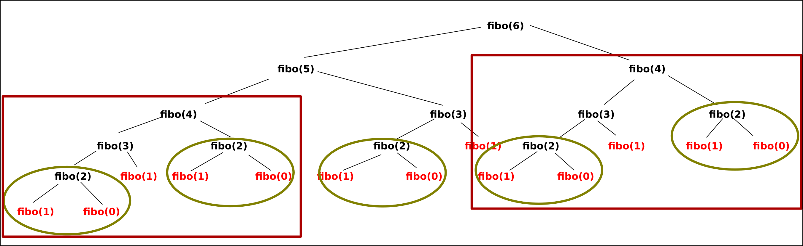

Principes de la programmation dynamique
Un premier exemple débranché
Parcours sur une grille
-
Combien y-a-t'il de chemin menant du point \(D\) au point \(A\) sur le graphique suivant, en ne se déplaçant à chaque pas que vers la droite ou vers le bas ?
-
Combien y-a-t'il de chemin menant du point \(D\) au point \(A\) sur le graphique suivant, en ne se déplaçant à chaque pas que vers la droite ou vers le bas ?
A venir !
La suite de Fibonacci
La suite de Fibonacci est une suite définie par une récurence d'ordre 2 de la manière suivante, :
Calculer
Calculer les 10 premiers termes de la suite de Fibonacci.
Les 10 premiers termes sont : 0, 1, 1, 2, 3, 5, 8, 13, 21, 34
Notation
On notera \(F(n)\) le nombre de la suite de Fibonacci de rang \(n\). Par exemple \(F(0) = 0\) et \(F(6) = 13\).
Algorithmiquement parlant, la suite de Fibonacci étant une suite définie par récurrence, nous serions tentés de créer une fonction récursive pour calculer les termes \(F(n)\) de la suite. Pour ce faire, nous pourrions utiliser la fonction suivante :
1 2 3 4 5 6 7 | |
La question que nous devons nous poser est : est-ce un choix judicieux ?
Tester et voir les limites
-
Tester la fonction
fiboavec le code suivant :Que constate-t'on ?import time for n in range(40) : start = time.perf_counter() print(f"fibo({n}) = {fibo(n)}", end="") end = time.perf_counter() print(f" Temps : {end - start}") -
Réaliser un schéma de la pile d'appels récursif effectués lors de l'exécution de
fibo(6).
- Le temps d'exécution croît de manière exponentielle.
-
On a la construction suivante :
Multiples appels
Dans l'exemple précédent de calcul de fibo(6), on peut constater que les appels récursifs sont nombreux, et souvent pour calculer plusieurs fois la même chose :

Ainsi :
fibo(2)est calculé à 5 reprises ;fibo(3)est calculé à 3 reprises ;fibo(4)est calculé à 2 reprises.
Le nombre d'appels augmente exponentiellement en fonction de n. Par exemple le calcul récursif de fibo(20) nécessite \(4~181\) appels au calcul fibo(2), celui de fibo(30) le nécessite \(514~229\) fois, celui de fibo(40) le nécessite \(63~245~986\) fois....
Si la limite de récursion (qui est de 1000 par défaut pour Python) n'est pas atteinte pour fibo(40), le temps de calcul, lui, croît aussi exponentiellement...
Programmation dynamique
Premiers exemples sur la suite de Fibonacci
En considérant l'algorithme précédant, on comprend bien qu'il est particulièrement inefficace de calculer plusieurs fois le même sous-calcul. Afin d'améliorer le temps de calcul de l'algorithme, nous décidons donc de mémoriser les calculs déjà effectués dans un tableau. Il existe deux méthodes différentes :
Programmation dynamique de la suite de Fibonacci
On va calculer les nombres de la suite de Fibonacci jusqu'à \(F(n)\) en partant de \(F(0)\) et \(F(1)\). On appelle ce type de méthode une méthode Bottom-Up. Ce n'est pas une méthode récursive.
1 2 3 4 5 6 | |
On va calculer les nombres de Fibonacci récursivement, mais en sauvegardant les calculs déjà effectués dans une liste Python, en profitant de sa mutabilité. On appelle ce type de méthode une approche Top-Down :
1 2 3 4 5 6 7 8 9 10 | |
L'explication la plus simple du fonctionnement est visible dans Thonny, en utilisant le debugger, ou bien ici, pour un exemple sur fiboDesc(6).
Principes de la programmation dynamique
La programmation dynamique, introduite au début des années 1950 par Richard Bellman, est une méthode pour résoudre des problèmes en combinant des solutions de sous-problèmes, tout comme les méthodes de type diviser pour régner.
Un algorithme de programmation dynamique résout chaque sous-sous-problème une seule fois et mémorise sa réponse dans un tableau, évitant ainsi le re-calcul de la solution chaque fois qu'il résout chaque sous-sous-problème.
La programmation dynamique s'applique généralement aux problèmes d'optimisation, comme ceux que nous avons vu l'an passé lorsque nous avons étudié les algorithmes gloutons.
Le problème du rendu de monnaie
Largement inspiré de https://isn-icn-ljm.pagesperso-orange.fr/NSI-TLE/res/res_rendu_de_monnaie.pdf.
Le problème : introduction et traitement débranché
Vous avez à votre disposition un nombre illimité de pièces de 2 cts, 5 cts, 10 cts, 50 cts et 1 euro (100 cts). Vous devez rendre une certaine somme (rendu de monnaie). Le problème est le suivant : "Quel est le nombre minimum de pièces qui doivent être utilisées pour rendre la monnaie"
La résolution "gloutonne" de ce problème peut être la suivante :
- On prend la pièce qui a la plus grande valeur (il faut que la valeur de cette pièce soit inférieure ou égale à la somme restant à rendre).
- On recommence l’opération ci-dessus jusqu’au moment où la somme à rendre est égale à zéro.
Questions
- Appliquer cette méthode pour une somme de 1€77 (177cts) à rendre.
- Appliquer cette méthode à la somme de 11 centimes.
- Quel est le problème ?
- Proposer une solution permettant de rendre 11 centimes. Est-elle unique ?
Mise au point d'un algorithme récursif
Nous allons essayer de mettre au point un algorithme récursif donnant une solution au problème de rendu de monnaie en utilisant le nombre minimal de pièces.
Questions
-
Compléter l'arbre suivant donnant l'ensemble des possibilités de répartition des pièces :
-
Combien de chemins sont des impasses (on termine avec 1 cts restant) ? Combien de solutions existent ? Quelle est la solution utilisant le nombre minimal de pièces ?
Force Brute
Quand une méthode traite tous les cas possibles, on parle souvent de méthode en force brute.
-
Compléter la fonction suivante pour qu'elle donne le nombre minimal de pièces utilisées pour une somme
sdonnée :def rendu_monnaie_rec(P : list, s : int) -> int: """ renvoie le nombre minimal de pièces pour rendre la somme s en utilisant le jeu de pièces P""" if s==0: return 0 else: mini = float('inf') # On fixe le nombre de piècé à l'infini for i in range(len(P)): if ... <= s: nb = 1 + ... if nb < mini: mini = nb return mini -
Testez la fonction avec le jeu de pièces
(2, 5, 10, 100), et pour des sommes augmentant à partir de 11 cts. A partir de quelle v somme le programme devient-il visiblement plus lent ?
Passage en programmation dynamique
On constate dans la partie précédente que la méthode précédente fait de trop nombreux appels récursifs, qui ralentissent considérablement le temps de calcul, voire plante le programme dès que la taille maximale de la pile est dépassée.
On va donc utiliser la programmation dynamique pour accélérer la vitesse de traitement du problème :
Questions
On considère la fonction suivante :
def renduMonnaie1(P : list, s : int) -> int | None :
nb = [0]+[None] * (s)
for n in range(1, s+1) :
for p in P :
if p <= ... and nb[...] is not None :
if nb[n] is ... or ... > 1 + nb[n-p]:
nb[n] = 1 + nb[n-p]
return ...
None s'il est impossible de rendre la monnaie.
-
Est-ce une méthode ascendante ou descendante ?
-
Créer une fonction
renduMonnaie2(P : list, s : int) -> int | Noneutilisant l'autre méthode.
Pour aller plus loin
Nos codes précédents ne nous permettent que de connaitre le nombre minimal de pièces nécessaire pour un rendu de monnaie donné. Nous ne connaissons par contre pas quelles pièces sont nécessaires.
Transformez une des fonction précédente afin qu'elle renvoie les pièces nécessaires au rendu de monnaie.